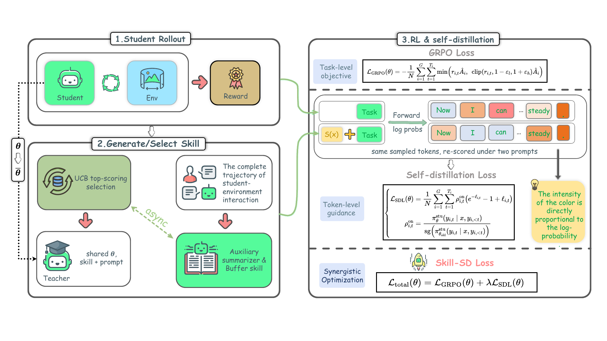
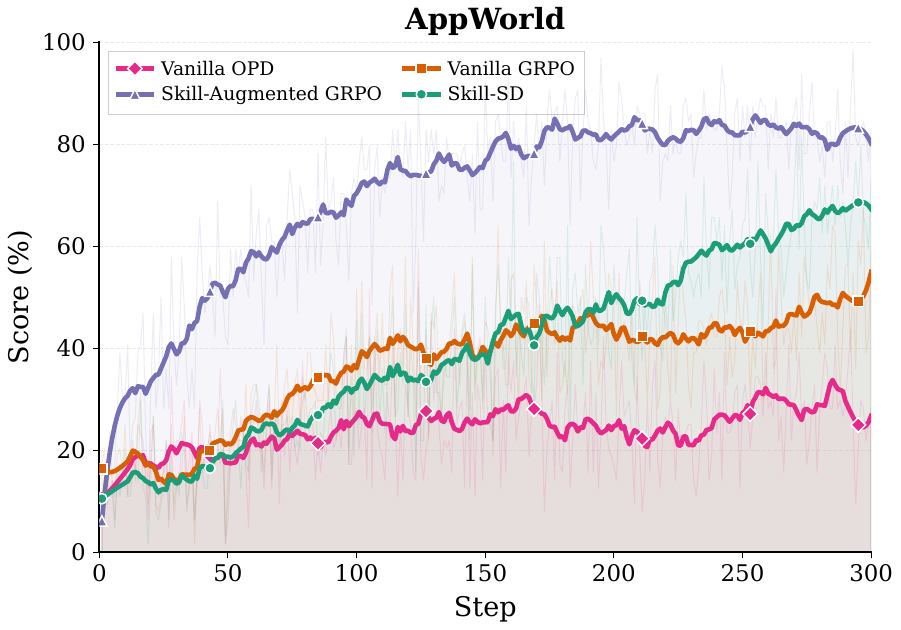
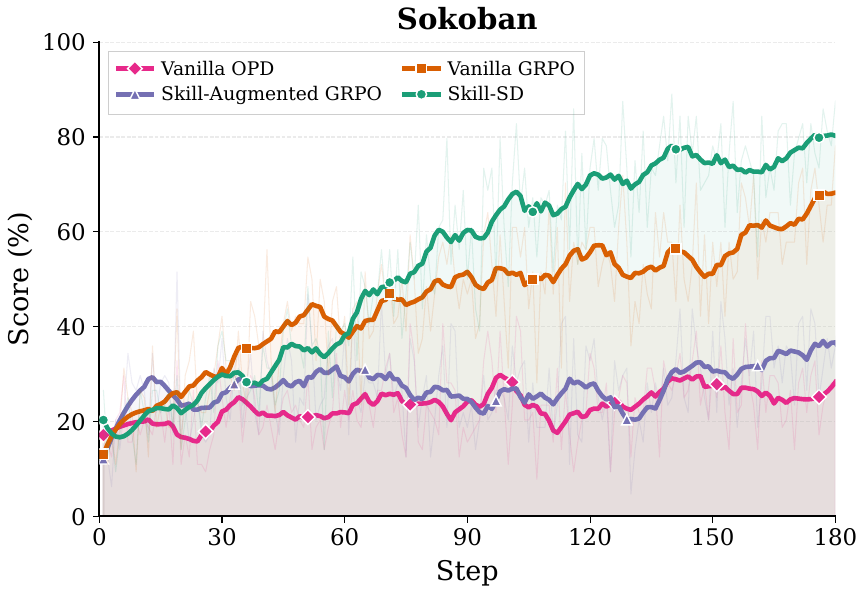
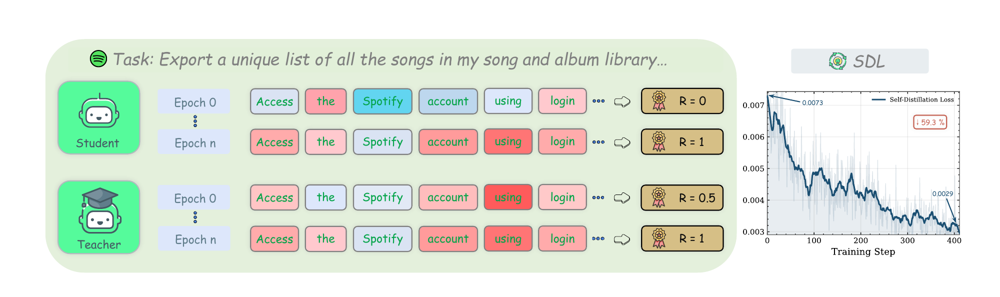
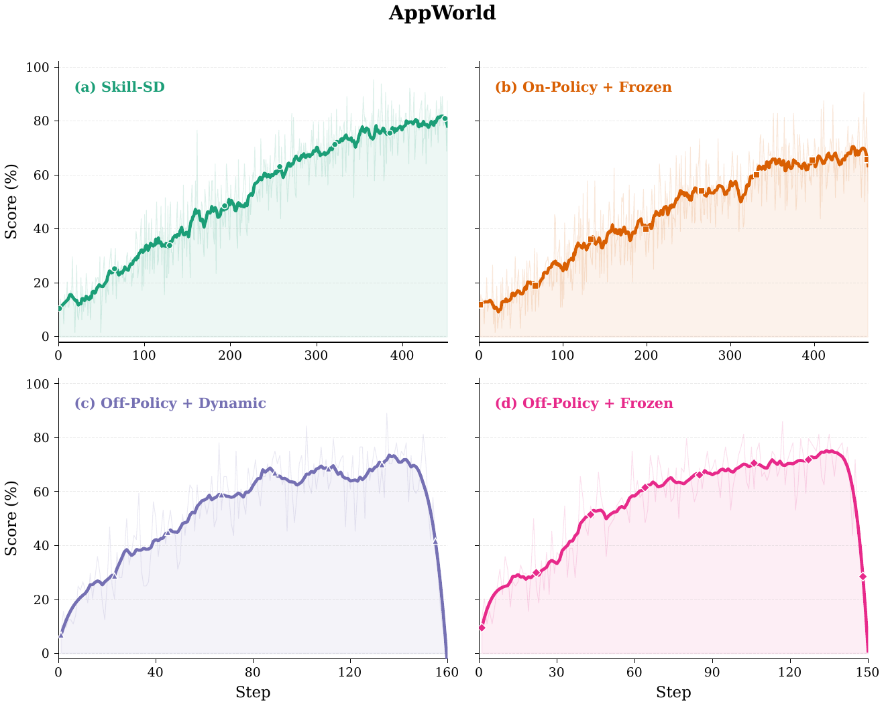
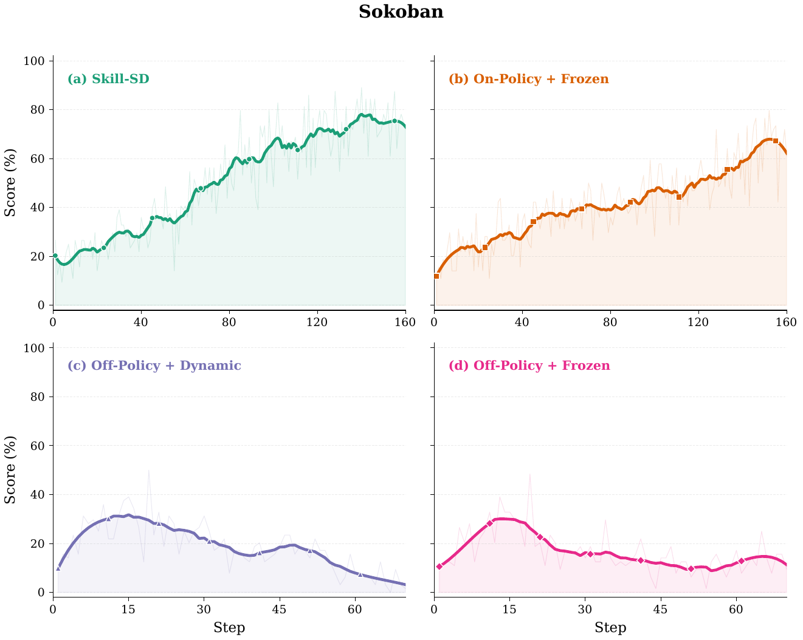
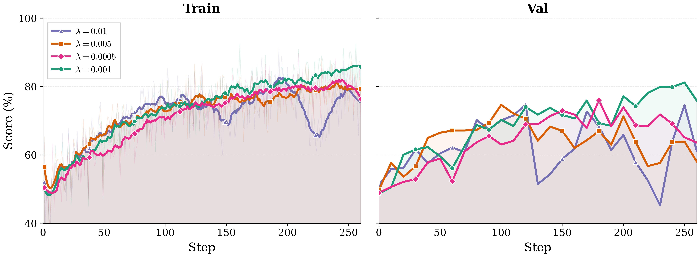

Dynamic Skill Summaries
Each completed trajectory is asynchronously summarized into a structured skill: success patterns, mistake analysis, and a golden workflow.
Skill-SD
Abstract
Reinforcement learning (RL) has been widely used to train LLM agents for multi-turn interactive tasks, but its sample efficiency is severely limited by sparse rewards and long horizons. On-policy self-distillation (OPSD) alleviates this by providing dense token-level supervision from a privileged teacher that has access to ground-truth answers. However, such fixed privileged information cannot capture the diverse valid strategies in agent tasks, and naively combining OPSD with RL often leads to training collapse. To address these limitations, we introduce Skill-SD, a framework that turns the agent's own trajectories into dynamic training-only supervision. Completed trajectories are summarized into compact natural language skills that describe successful behaviors, mistakes, and workflows. These skills serve as dynamic privileged information conditioning only the teacher, while the student always acts under the plain task prompt and learns to internalize the guidance through distillation. To stabilize the training, we derive an importance-weighted reverse-KL loss to provide gradient-correct token-level distillation, and dynamically synchronize the teacher with the improving student. Experimental results on agentic benchmarks demonstrate that Skill-SD substantially outperforms the standard RL baseline, improving both vanilla GRPO (+14.0%/+10.9% on AppWorld/Sokoban) and vanilla OPD (+42.1%/+40.6%).
Contributions
Each completed trajectory is asynchronously summarized into a structured skill: success patterns, mistake analysis, and a golden workflow.
Skills augment the teacher's prompt only. The student always operates under a clean task prompt, eliminating train-test mismatch.
An importance-weighted reverse-KL loss corrects per-token gradient bias caused by teacher and student distribution mismatch.
Method
The student rolls out using only the task prompt — no distilled skills — preserving identical train/test conditioning.
An auxiliary LLM compresses each episode into a reusable skill summary of successes, failures, and workflow.
Retrieved skills go only to the teacher, which re-scores the trajectory token by token — student inputs stay unchanged.
GRPO handles trajectory-level reward; importance-weighted reverse-KL distills token-level guidance and corrects teacher-student mismatch.
Pipeline

Appendix Insight
Skill-SD does not archive full trajectories as supervision. Each completed attempt is compressed into a compact teacher-only JSON artifact that records what to reuse, what to avoid, and what the next best rollout should do.
skill.json
Benchmark Results
Model: Qwen3-4B-Instruct-2507. Subscripts denote absolute change from the base model.
| Method | AppWorld | Sokoban | Avg. | |||
|---|---|---|---|---|---|---|
| Acc. | Comp. | Acc. | Comp. | Acc. | Comp. | |
| Base Model | 8.8% | 39.1% | 12.5% | 32.0% | 10.6% | 35.6% |
| Vanilla OPD | 22.8%+14.0 | 59.7%+20.6 | 21.9%+9.4 | 37.5%+5.5 | 22.4%+11.7 | 48.6%+13.0 |
| Vanilla GRPO | 50.9%+42.1 | 76.3%+37.2 | 51.6%+39.1 | 68.8%+36.8 | 51.2%+40.6 | 72.5%+36.9 |
| Skill-Augmented GRPO | 42.1%+33.3 | 76.1%+37.0 | 20.3%+7.8 | 37.5%+5.5 | 31.2%+20.6 | 56.8%+21.2 |
| Skill-SD (Ours) | 64.9%+56.1 | 84.9%+45.8 | 62.5%+50.0 | 71.1%+39.1 | 63.7%+53.1 | 78.0%+42.4 |


Ablations
Both off-policy variants collapse during mid-training. The failure is especially severe on Sokoban, where off-policy accuracy drops to 12.5% or 10.9% — matching the uninstructed base model.
Within on-policy training, synchronizing the teacher from the latest student checkpoint adds +15.8 pp on AppWorld and +12.5 pp on Sokoban over a frozen teacher.
Directly prepending skills to the student hurts performance: Skill-Augmented GRPO underperforms Vanilla GRPO on both AppWorld (42.1% vs. 50.9%) and Sokoban (20.3% vs. 51.6%).
Subscripts denote absolute change from Skill-SD. *Training collapsed during mid-training; values reflect the checkpoint before collapse.
| Rollout | Teacher | AppWorld | Sokoban | Avg. | |||
|---|---|---|---|---|---|---|---|
| Acc. | Comp. | Acc. | Comp. | Acc. | Comp. | ||
| On-policy | Frozen | 49.1%−15.8 | 79.0%−5.9 | 50.0%−12.5 | 63.3%−7.8 | 49.6%−14.1 | 71.1%−6.9 |
| On-policy | Dynamic | 64.9% | 84.9% | 62.5% | 71.1% | 63.7% | 78.0% |
| Off-policy* | Frozen | 45.6%−19.3 | 78.8%−6.1 | 12.5%−50.0 | 31.3%−39.8 | 29.1%−34.6 | 55.0%−23.0 |
| Off-policy* | Dynamic | 42.1%−22.8 | 76.5%−8.4 | 10.9%−51.6 | 32.0%−39.1 | 26.5%−37.2 | 54.3%−23.7 |
Optimization Dynamics



Hyperparameter Sweep
The SDL coefficient mediates the RL–distillation trade-off. λ = 0.001 achieves 81.19% validation completion, acting as a mild shaping term that guides the student without dominating the RL signal.
| λ | Val. Completion |
|---|---|
| 0.01 | Unstable, below optimum |
| 0.005 | 74.66% |
| 0.001 | 81.19% (best) |
| 0.0005 | 75.98% |

Citation
@misc{wang2026skillsdskillconditionedselfdistillationmultiturn,
title={Skill-SD: Skill-Conditioned Self-Distillation for Multi-turn LLM Agents},
author={Hao Wang and Guozhi Wang and Han Xiao and Yufeng Zhou and Yue Pan and Jichao Wang and Ke Xu and Yafei Wen and Xiaohu Ruan and Xiaoxin Chen and Honggang Qi},
year={2026},
eprint={2604.10674},
archivePrefix={arXiv},
primaryClass={cs.LG},
url={https://arxiv.org/abs/2604.10674},
}